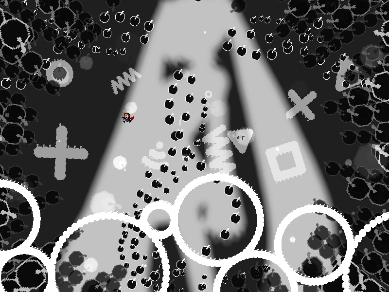
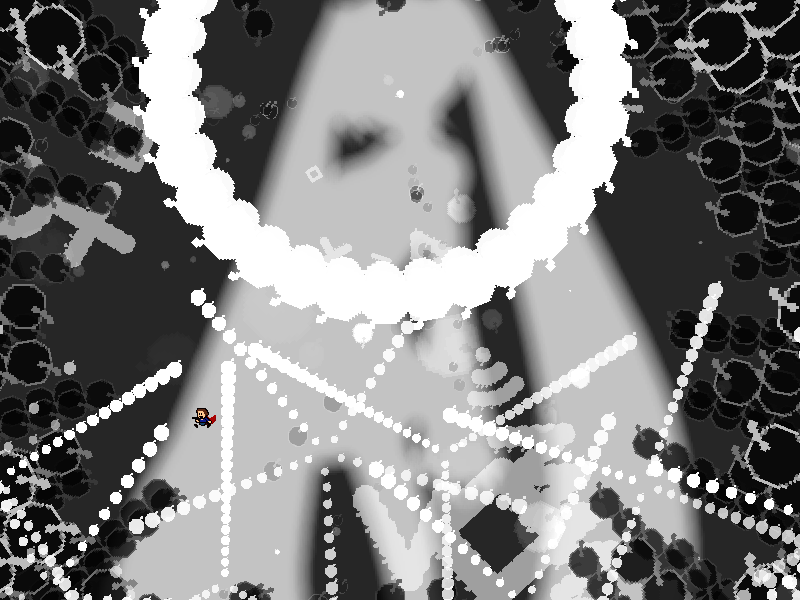
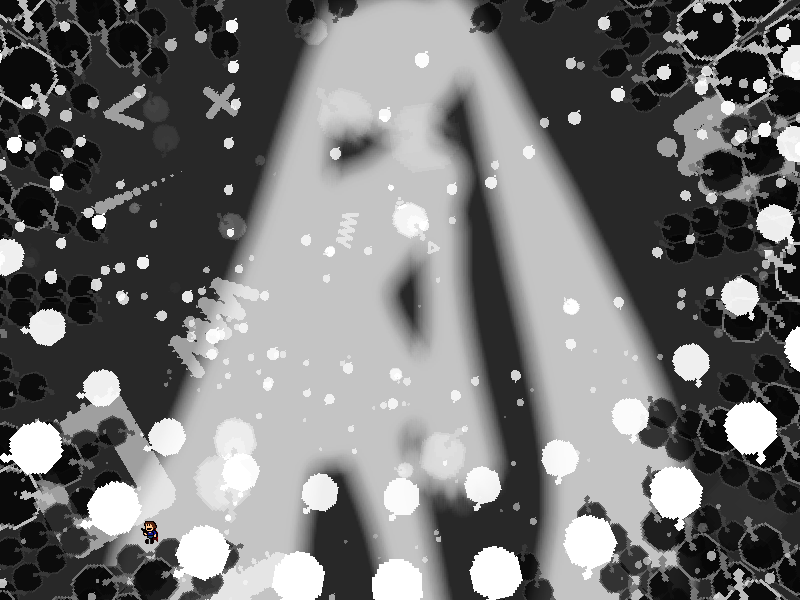

chapter9 - section1

| creator | segment | label | jump |
|---|---|---|---|
| NN | 1:58.20~2:00.00 | R | infinite |
自機狙いを題材とした弾幕です。
画面下部に生成される円形弾幕（fig.9-1.1.a）に関して、1:59.34においてそれぞれの中心から自機狙い弾幕が生成されます（fig.9-1.1.b）。
自機狙い弾幕を構成する弾のうち、その角度に関して射出時における中心からみたプレイヤーの角度以外をもつものについては当たり判定が存在しません。


また、1:59.20において画面上部を中心としてされる円形弾幕（fig.9-1.2）については、各時刻において中心からみたプレイヤーの角度に対して最も開いた形状をとります。

なお、画面中央を中心として回転する黒色の棒状弾幕については、これらの中で最も手前の層に存在するものにのみ当たり判定が存在します。